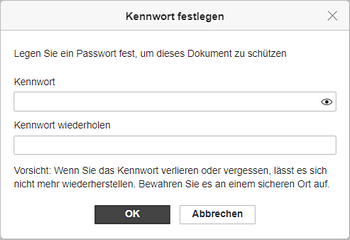

PDF Formulare mit einem Kennwort schützen
Sie können Ihre PDF Formulare mit einem Kennwort schützen, das Ihre Mitautoren benötigen, um zum Bearbeitungsmodus zu wechseln. Das Kennwort kann später geändert oder entfernt werden.
Wenn Sie das Kennwort verlieren oder vergessen, lässt es sich nicht mehr wiederherstellen. Bewahren Sie es an einem sicheren Ort auf.
Kennwort erstellen
-
gehen Sie zur Registerkarte Datei in der oberen Symbolleiste und wählen Sie die Option Schützen. Klicken Sie auf die Schaltfläche Kennwort hinzufügen, um das Fenster Kennwort festlegen zu öffnen
oder gehen Sie zur Registerkarte Schutz und wählen Sie die Option Verschlüsseln,
-
geben Sie das Kennwort im Feld Kennwort ein und wiederholen Sie es im Feld Kennwort wiederholen nach unten. Klicken Sie auf das Symbol , um die Kennwortzeichen bei der Eingabe anzuzeigen oder auszublenden,

-
klicken Sie auf OK, wenn Sie bereits sind.
Um das Dokument mit den vollen Zugriffsrechten zu öffnen, muss der Benutzer das festgelegte Kennwort eingeben.
Kennwort ändern
-
gehen Sie zur Registerkarte Datei in der oberen Symbolleiste und wählen Sie die Option Schützen. Klicken Sie auf die Schaltfläche Kennwort ändern, um das Fenster Kennwort festlegen zu öffnen
oder gehen Sie zur Registerkarte Schutz und wählen Sie die Option Verschlüsseln,
- legen Sie ein neues Kennwort im Feld Kennwort fest und wiederholen Sie es im Feld Kennwort wiederholen darunter. Klicken Sie auf das Symbol , um die Zeichen des Passworts bei der Eingabe anzuzeigen oder auszublenden,
- klicken Sie auf OK.
Kennwort löschen
- öffnen Sie die Registerkarte Datei in der oberen Symbolleiste,
- wählen Sie die Option Schützen aus,
- klicken Sie auf die Schaltfläche Kennwort löschen.